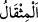
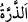
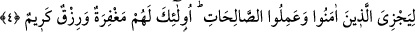
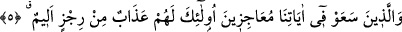
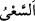
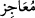

kimse demektir. “
” ise kendisiyle tartı yapılan ağırlık birimidir. (Terazide) her
mukabil ağırlığa verilen isimdir. Nitekim el-Müfredât’ta böyle geçmektedir. “
(zerre), küçük kırmızı karınca veya güneş ışığında görülen toz zerrecikleridir.
“Göklerde ve yerde” ifâdesinde Allah Teâlâ’nın ruhları ve cisimleri bildiğine işâret
vardır.
“Bundan” miktardan “daha küçük ve daha büyüğü de şüphesiz, apaçık kitaptadır”
her şeyi izhar eden levh-i mahfuzda yazılmış ve tesbit edilmiştir.
Her şeyin levh-i mahfuzda yazılmış olması unutma endişesiyle değil muhatapların
âdetine göre cereyan etmiştir. Bir de üzerinden uzun asırlar ve zaman geçse de onda bir
bozulma olmadığının bilinmesi içindir.
4. Allah, inanıp iyi işler yapanları mükâfatlandırmak için (her şeyi açık bir kitapta
tesbit etmiştir). Onlar için büyük bir mağfiret ve güzel bir rızık vardır.
“Allah, inanıp iyi işler yapanları mükâfatlandırmak için (her şeyi açık bir kitapta
tesbit etmiştir).” cümlesi, üçüncü âyetteki “(kıyâmet) mutlaka size gelecektir.”
ifâdesinin illetini/sebebini ortaya koymakta ve kıyâmetin getirilmesini gerektiren şeyin
ne olduğunu bildirmektedir. Şu halde âyet başındaki “lâm” aklen illet için, şer’an da
maslahat ve hikmet içindir.
“Onlar” îman ve amel ile vasfedilenler “için” bu sebeple dünyada “büyük bir
mağfiret” hiçbir beşerin âzâde olmadığı onlardan sâdır olan hatalara örtme/gizleme,
yok etme “ve” âhirette yorgunluk ve başa kakmanın olmadığı “güzel bir rızık vardır.”
5. Âyetlerimizi hükümsüz bırakmak için yarışırcasına uğraşanlar için de, en
kötüsünden, elem verici bir azap vardır.
Reddetmek, karalamak, insanları tasdik etmekten alıkoymak sûretiyle Kur’ânî
“âyetlerimizi hükümsüz bırakmak için yarışırcasına uğraşanlar için de,” bizim
elimizden kurtulmak üzere yarışanlar için; Bahru’l-ulûm’da belirtildiği üzere “kendi
iddiâlarınca ve takdirlerince bizim elimizden kurtulacaklarını, İslâm’a kurdukları
hilelerinin kendilerine yeteceğini zannedenler için…
el-Müfredât’ta der ki: “
” koşmaksızın hızlıca yürümektir. İyi olsun kötü olsun her
işte çalışıp gayret göstermek için kullanılır. “
” başkasını âciz kılandır. Yâni bizi
âciz bırakacaklarını zan ve takdir edenler için demektir. Çünkü onlar diriliş, haşr-neşr